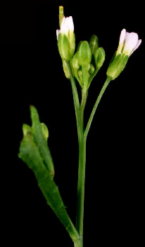

Arabidopsis Biological Resource Center and AIMS News
Randy Scholl, Keith Davis and Sakti Pramanik
Arabidopsis Biological Resource Center, Room 309 Botany & Zoology Bldg., Ohio State University, 1735 Neil Ave., Columbus, OH 43210 USA
phone: +6142929371
fax: +6142920603
email: arabidopsis+@osu.edu
AIMS WWW Server URL: http://aims.cps.msu.edu/aims/
ABRC is now mailing the new 1996 catalog supplement. As mentioned in the previous issue of Weeds World, we are publishing the current catalog in the form of a Supplement to the 1995 edition. This will save substantial production and mailing charges. In addition to the hard copy version of the supplement, we have also compiled a Web version of the catalog. Note that the stocks of the 1995 Seed List are still available and can be ordered. The electronic version of this list is also maintained on our Web server. Either document may be printed from your Web browser by chapters. Of course, all new and previous stocks are included in AIMS and can be searched, browsed and ordered from the database. In addition, color images are available in AIMS for many of the seed stocks, including representative photographs for a majority of the different phenotypes.
We are mailing catalog supplements to individuals who received the 1995 catalog. However, if you prefer to use the Web version, just send an email to our main address and we will not mail a paper version to you. We are certainly pleased to provide the paper version to all who want one.
The stocks now available and described in the catalog and AIMS include the following:
Some of the above stocks have been in distribution for differing time periods since the previous catalog, but the majority are new. We hope that you will find these stocks useful.
- More than 100 new mutant lines;
- Several ecotypes collected from new locations and having interesting characteristics;
- T-DNA lines from the Koncz laboratory;
- Enhancer and gene trap transposon lines from the Martienssen laboratory;
- Lines with mapped Ds elements for transposon tagging from the Baker laboratory;
- More than 80 new DNA stocks containing cloned genes;
- New ARMS clones from the Schaeffner laboratory;
- RFLP cosmids from the Goodman laboratory;
- A library for two hybrid screening from the Theologis laboratory;
- A P1 library from Mitsui and RITE;
- A BAC library from Texas A&M;
- YAC libraries from the Ecker laboratory (yUP) and CNRS France (CIC).
The single lines from most of the original Feldmann T-DNA population are now available for followup analysis. It will not be possible to order the entire set of these lines, since we do not have the resources to assemble such large quantities of stocks. However, groups of them corresponding to small sets such as one or a few pools of 20 lines can be ordered. Currently, you may inquire about these using the Feldmann number. We expect to have the stock information for these lines entered into AIMS by Sept. 1, so that the lines can be ordered by stock number after that date. We are currently growing a set of 2000+ lines donated by the Thomas Jack laboratory and hope to be able to distribute these by late autumn. We would be pleased to receive other T-DNA line donations, preferably in groups of at least 1000 lines. It is also an excellent time to donate other seed and DNA stocks. The donation forms are available from the AIMS FTP server.
The isolated DNA from the Feldmann T-DNA lines has been received by the Center and will be available as soon as aliquoting is completed. This DNA was isolated in a two-dimensional pooling scheme so that screening of the pools should identify a group of 10 lines of which the correct line is a member. Seeds of the 10 individual lines can then be obtained to isolate the actual mutant. An announcement will be posted to the newsgroup when this stock is ready for distribution.
All questions about ABRC or AIMS may be addressed to Dr. Randy Scholl (scholl.1@osu.edu), Dr. Keith Davis (davis.68@osu.edu), Dr. Sakti Pramanik (pramanik@cps.msu.edu) or Mr. Nasser Assem, the AIMS Manager (aims-manager@cps.msu.edu).